Protein handling and organelles
A protein is not made once and kept forever. It must fold in a crowded cytosol, it is switched on and off by chemical marks, and sooner or later it is destroyed, some within minutes, some after years. Today: the life of a protein from the ribosome to the proteasome.
After this lecture you can:
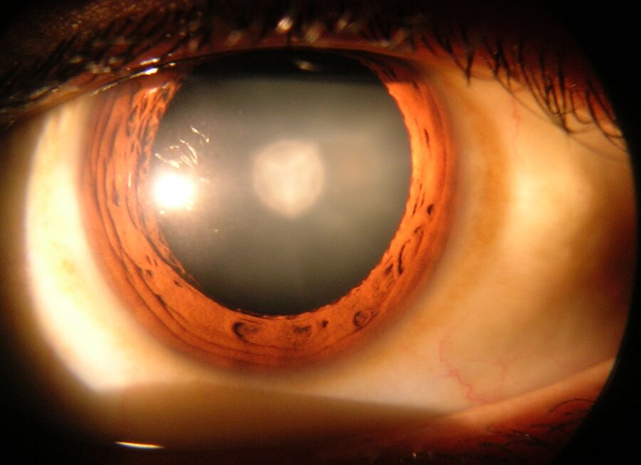
Cataract: the lens of this eye has become cloudy.
How does a cell decide which protein to destroy, and when? And how does a protein keep its shape at all?
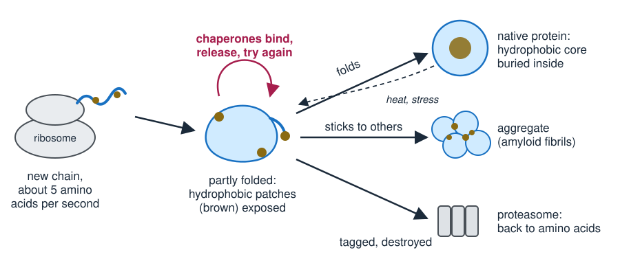
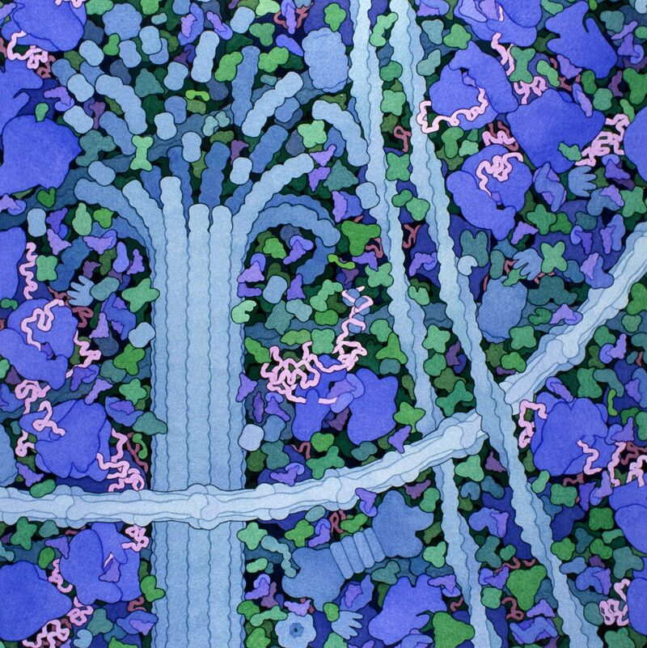
Painting of the cytoplasm at molecular scale, drawn from known structures. Blue: ribosomes; long tubes: cytoskeleton filaments.
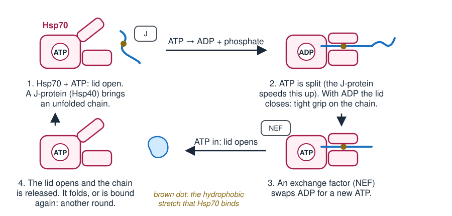
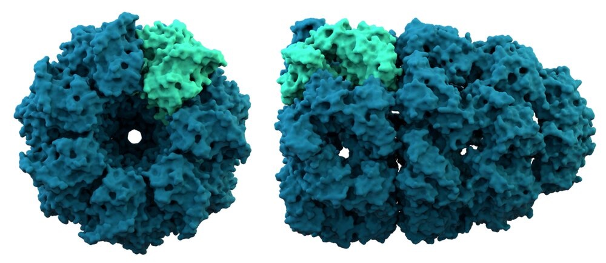
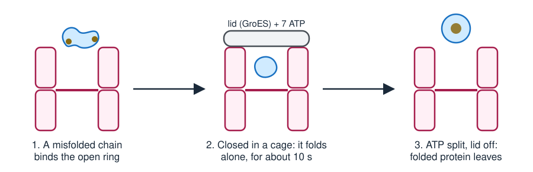
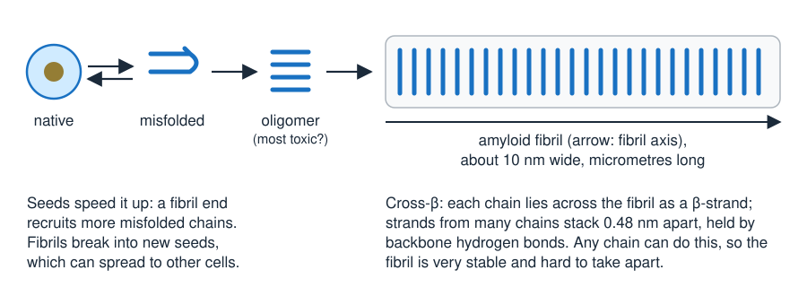
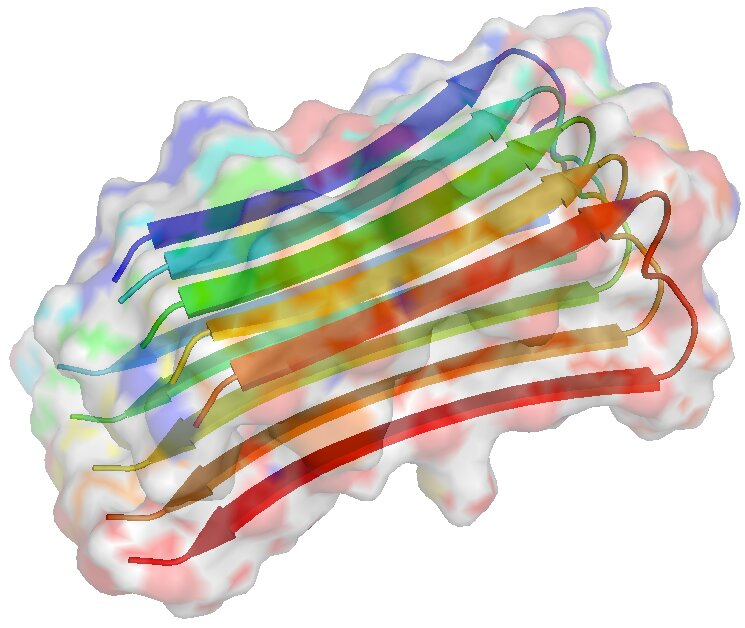
Model of an amyloid fibril: β-strands (arrows) from many chains stacked into one long sheet.
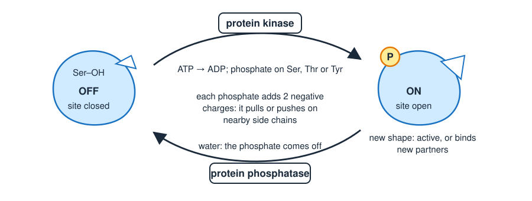
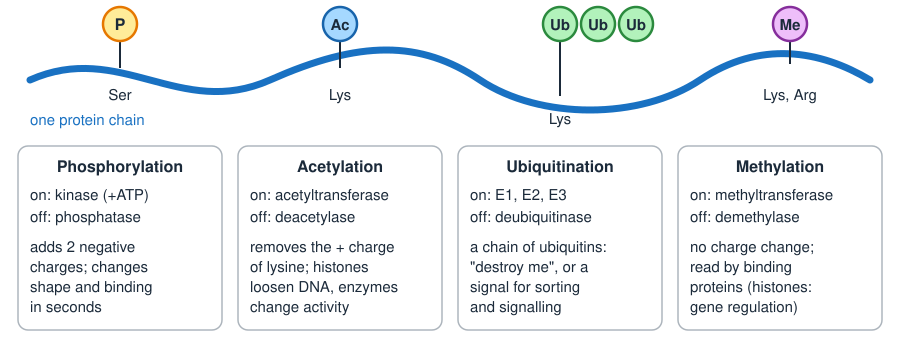
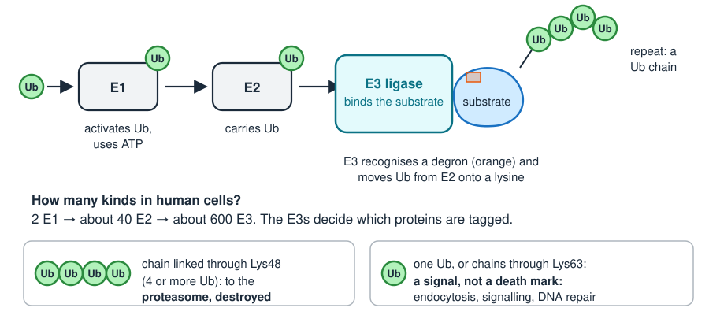
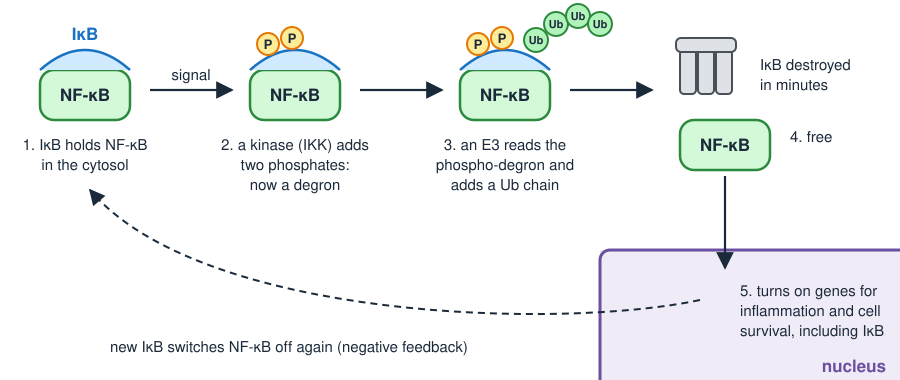
A degron is a feature that an E3 recognises:
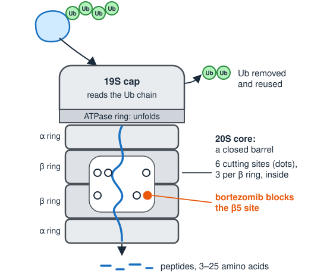
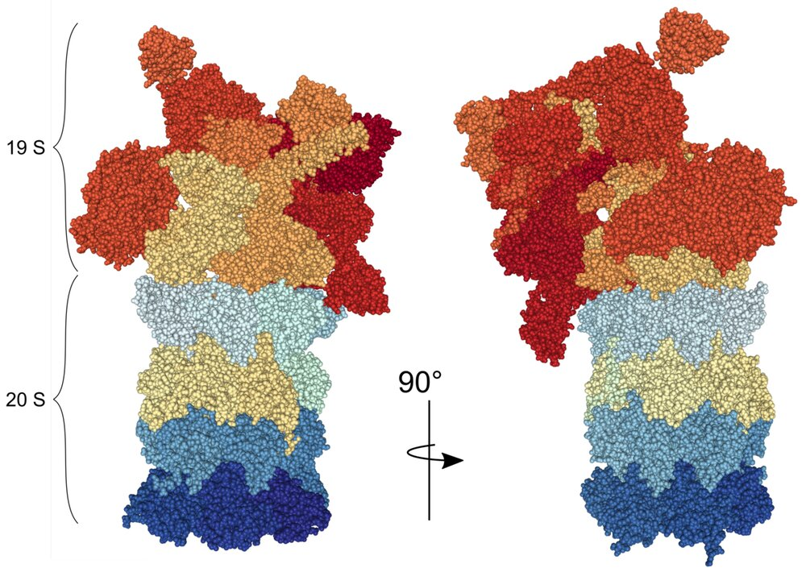
Structure of the yeast 26S proteasome: 20S core (blue–yellow rings) and 19S cap (red), each subunit in its own colour.
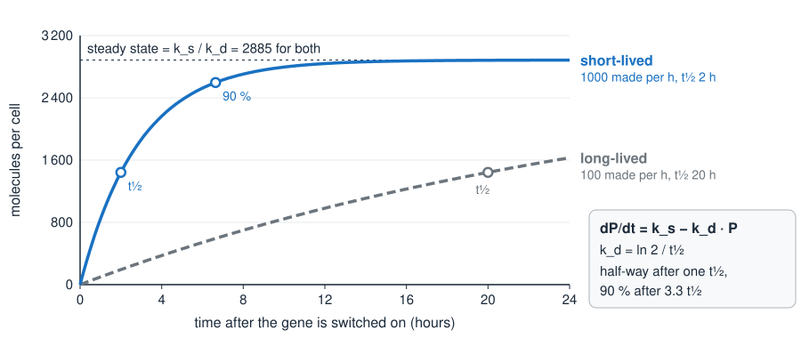
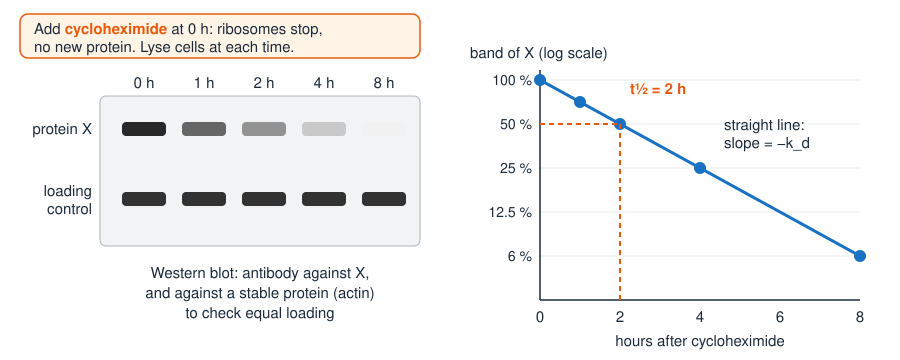
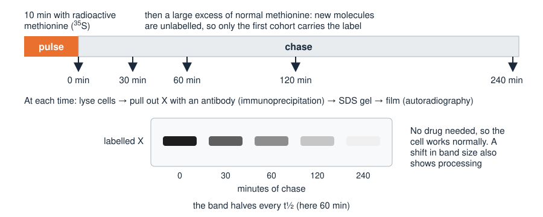
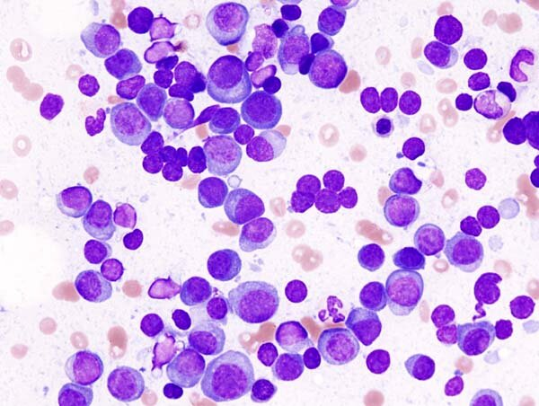
Bone marrow smear from a patient with multiple myeloma: many plasma cells (purple, round, nucleus to one side).
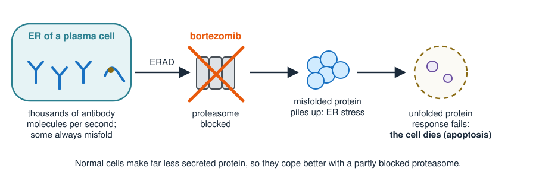
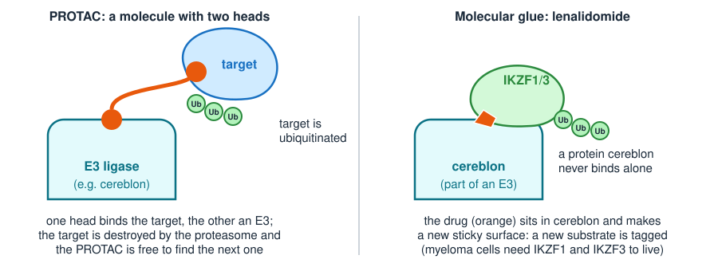
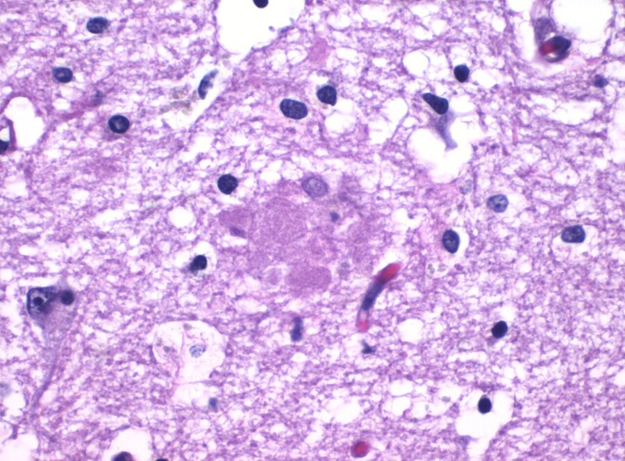
Alzheimer’s disease: an amyloid plaque (pink, centre) in the hippocampus.
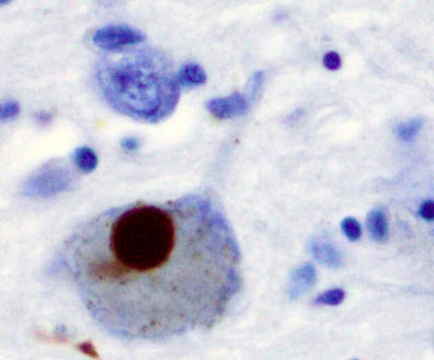
Parkinson’s disease: a Lewy body (brown, α-synuclein) in a neuron.
Read more (optional): Alberts et al., Molecular Biology of the Cell, 7th ed., ch. 3 and 6.